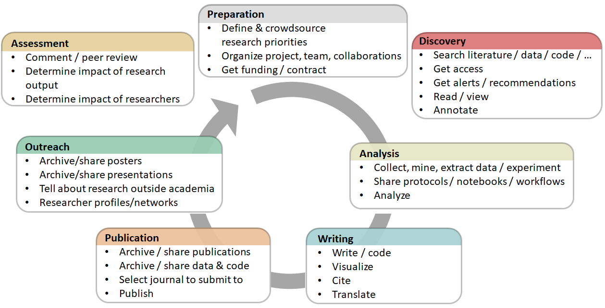

1. Open Concepts and Principles
What is it?
Open Science is the practice of science in such a way that others can collaborate and contribute, where research data, lab notes and other research processes are freely available, under terms that enable reuse, redistribution and reproduction of the research and its underlying data and methods (FOSTER Open Science Definition). In a nutshell, Open Science is transparent and accessible knowledge that is shared and developed through collaborative networks (Vicente-Sáez & Martínez-Fuentes 2018).
Open Science is about increased rigour, accountability, and reproducibility for research. It is based on the principles of inclusion, fairness, equity, and sharing, and ultimately seeks to change the way research is done, who is involved and how it is valued. It aims to make research more open to participation, review/refutation, improvement and (re)use for the world to benefit.
There are several definitions of "openness" with regards to various aspects of science; the Open Definition defines it thus: “Open data and content can be freely used, modified, and shared by anyone for any purpose”. Open Science encompasses a variety of practices, usually including areas like open access to publications, open research data, open source software/tools, open workflows, citizen science, open educational resources, and alternative methods for research evaluation including open peer review (Pontika et al., 2015). Pontika et al. (2015)
Pontika et al. (2015)
The aims and assumptions underlying the push to implement these various practices have been analysed by Fecher & Friesike (2013), whose analyses of the literature found five broad concerns, or "schools of thought". These are:
Democratic school: Believing that there is an unequal distribution of access to knowledge, this area is concerned with making scholarly knowledge (including publications and data) available freely for all.
Pragmatic school: Following the principle that the creation of knowledge is made more efficient through collaboration and strengthened through critique, this area seeks to harness network effects by connecting scholars and making scholarly methods transparent.
Infrastructure school: This thread is motivated by the assumption that efficient research requires readily available platforms, tools and services for dissemination and collaboration.
Public school: Based on the recognition that true societal impact requires societal engagement in research and readily understandable communication of scientific results, this area seeks to bring the public to collaborate in research through citizen science, and make scholarship more readily understandable through lay summaries, blogging and other less formal communicative methods.
Measurement school: Motivated by the acknowledgement that traditional metrics for measuring scientific impact have proven problematic (by being too heavily focused on publications, often only at the journal-level, for instance), this strand seeks "alternative metrics" which can make use of the new possibilities of digitally networked tools to track and measure the impact of scholarship through formerly invisible activities.
Rationale
Open Science, as defined above, encompasses a huge number of potential structural changes to academic practice, whose culture can often be hierarchical and conservative. Moreover, even where researchers are sympathetic to the aims of Open Science, they might not yet see the worth in taking them up, as existing incentive mechanisms do not yet reflect this new culture of openness and collaboration. As a consequence, convincing researchers of the need to change their practices will require a good understanding not only of the ethical, social and academic benefits, but also of the ways in which taking up Open Science practices will actually help them succeed in their work. This section will describe some of the core concepts, principles, actors, and practices in Open Science, and how these fit within a broader research ecosystem.

Learning objectives
Understand the social, economical, legal, and ethical principles and concepts underpinning Open Science.
Become familiar with the history of Open Science, and the disparity and diversity of views from different research communities, disciplines and cultures.
Gain insight into the developments around Open Science, and the personal impact these can have on researchers, research, and society more broadly.
Key components

Knowledge & Skills
Open Science is the movement to help make the results of scholarly research more accessible, including code, data, and research papers.
- It encompasses many different but often related aspects impacting the entire research lifecycle, including open publishing, open data, open source software, open notebook science, open peer review, open dissemination, and open materials (see glossary for definitions).
History of Open Science, and the motivations behind the movement.
The origins of academic publishing began in the 17th century with the first academic journals.
Increasing motivation to share resources between research disciplines, as well as increased transparency for greater efficiency, rigour, accountability, sustainability for future generations, and reproducibility.
Ethical cases whereby increased transparency can reduce fraud, data manipulation, and selective reporting of results.
Present state arose from pressure from research academies and governments for publicly-funded research to be shared more openly, often for the purpose of accelerated societal or economic growth and innovation.
Publicly funded research outputs should be publicly available.
Need to drive cultural change in research and amongst researchers.
Embracing of Web-based tools and technologies to facilitate scientific collaboration.
Differences and commonalities within Open Science practices, principles and communities.
It is generally accepted that Open Science leads to increased impact associated with wider sharing and re-use (e.g., the so-called "open access citation advantage").
Open Science could increase trust in science and in the reliability of scientific results.
Open Science and relations to licensing, copyright issues.
- Typically, open research outputs are openly licensed in order to maximize re-use while allowing the creator to retain ownership and receive credit for their work.
Questions, obstacles, and common misconceptions
Q: "What is the difference between Open Science and ‘science’?"
A: Open Science refers to doing traditional science with more transparency involved at various stages, for example by openly sharing code and data. Many researchers do this already, but don’t call it Open Science.
Q: "Does ‘Open Science’ exclude the Humanities and Social Sciences?"
A: No, the term Open Science is inclusive. Indeed, the case is that sometimes Open Science is more broadly referred to as ‘Open Research’ or ‘Open Scholarship’ to be more inclusive of other disciplines, principles and practices. However, Open Science is a commonly used term at multiple levels and so it makes sense to adopt it for communication purposes, with the proviso that it includes all research disciplines.
Q: "Does Open Science lead to misuse or misunderstanding of research?"
A: No, the application of Open Science principles is in fact a safeguard against misuse or misunderstanding. Transparency breeds trust, confidence and allows others to verify and validate the research process.
Q: "Will Open Science lead to too much information overload?"
A: It is better to have too much information and deal with it, than to have too little and live with the risk of missing the important parts. And there are technologies such as RSS feeds, machine learning and artificial intelligence that are making content aggregation easier.
Learning outcomes
Be able to explain the core underlying academic, economic, and societal principles and concepts supporting Open Science, and why this matters to you in terms of broader impacts.
Develop an understanding of the numerous dimensions of Open Science, and some of the tools and practices involved in this.
Be familiar with the present state of Open Science, and the diversity of perspectives that this encompasses.
Further reading
European Commission's Directorate-General for Research & Innovation (RTD) (2016). Open innovation, Open Science, open to the world - a vision for Europe. ec.europa.eu/digital-single-market/en/news/open-innovation-open-science-open-world-vision-europe
Fecher and Friesike (2014). Open Science: One Term, Five Schools of Thought. doi.org/10.1007/978-3-319-00026-8_2
High Level Group (2017). Europe's future. Open innovation, Open Science, open to the world: reflections of the Research, Innovation and Science Policy Experts (RISE). doi.org/10.2777/79895
Masuzzo and Martens (2017). Do you speak Open Science? Resources and tips to learn the language. doi.org/10.7287/peerj.preprints.2689v1
Watson (2015). When will ‘Open Science’ become simply ‘science’?. doi.org/10.1186/s13059-015-0669-2